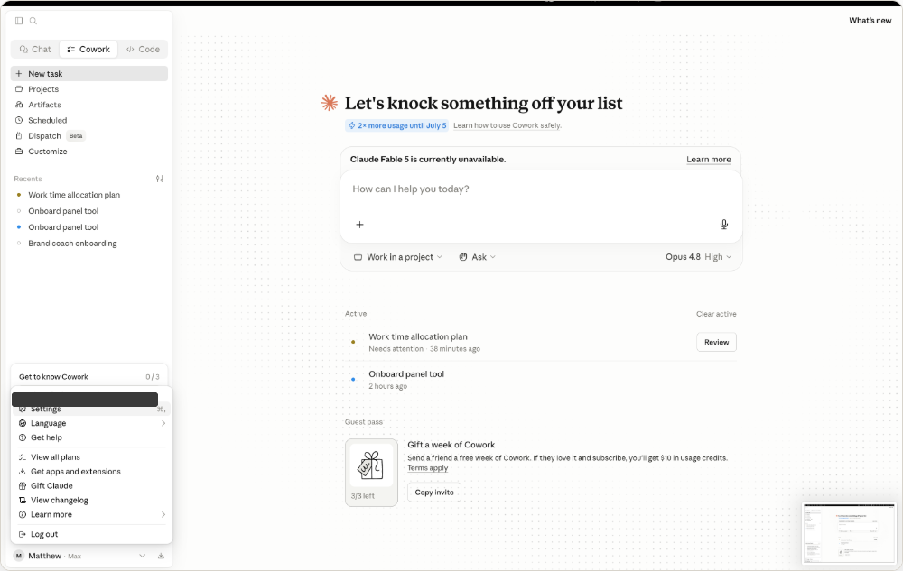
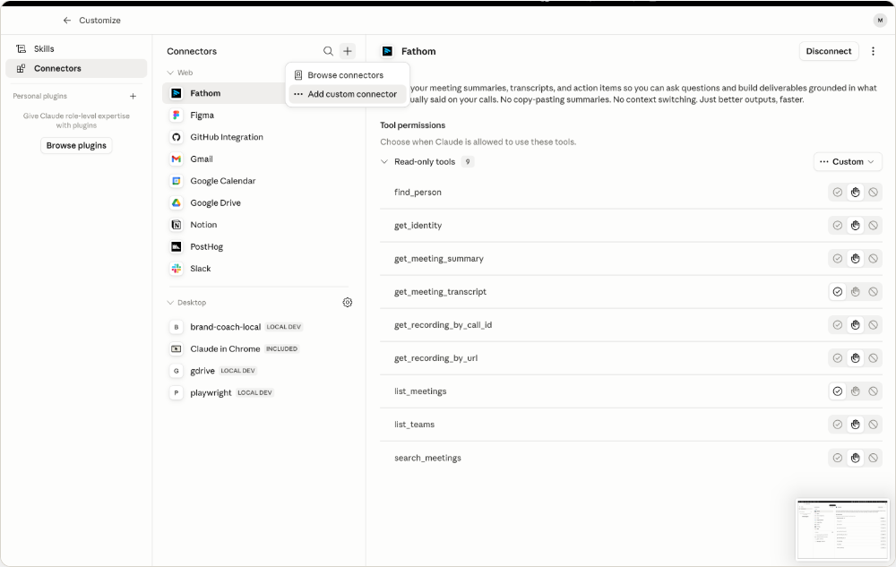
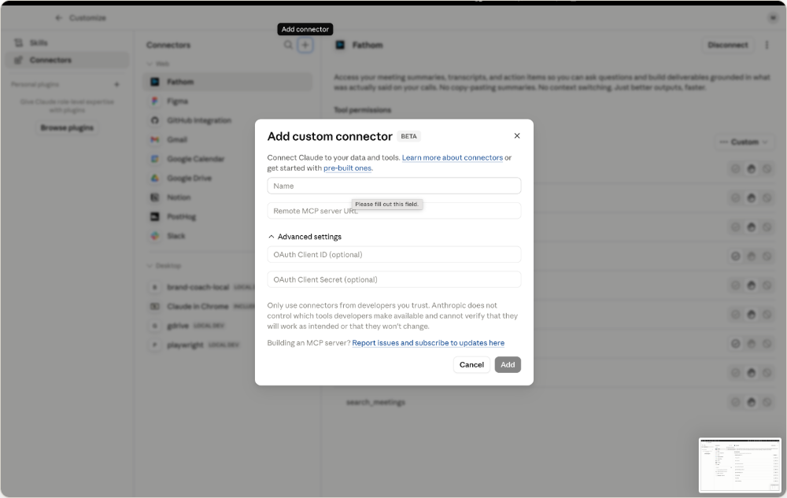
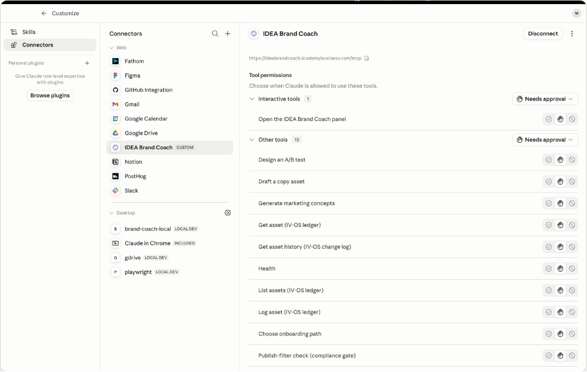

What captures the heart goes in the cart. Add the IDEA Brand Coach to Claude — built on Trevor Bradford’s book of the same name — and it walks you from cold start to your first real brand insight: the gap between how you see your brand and how your customers actually experience it.
Runs inside Claude · No account first · ~10 minutes
Connect the coach once as a Claude connector — then it’s always a click away, with the full book-grounded coaching library behind it. No account needed.
Setup steps verified against Claude — last updated June 14, 2026. Claude’s menus change; if yours looks different, the goal is the same: add a custom connector pointing at the URL below.
In Claude (desktop or claude.ai), click your name in the bottom-left and choose Settings.

Open Connectors, click the +, then Add custom connector. (In some Claude versions Connectors lives under Customize.)

Name it IDEA Brand Coach, paste the Remote MCP server URL below, and click Add. No login required.

The IDEA Brand Coach now appears in your connectors with its full toolset — ready to use in any chat.

https://ideabrandcoach.icodemybusiness.com/mcp
claude mcp add --transport http idea-brand-coach https://ideabrandcoach.icodemybusiness.com/mcpThen open a new chat, run the onboard prompt, and pick Simple Diagnostic or Full Contextual Upload.
Want the coach to judge each funnel piece on real numbers? Add the Windsor.ai connector in Claude alongside the Brand Coach, then just ask the coach to pull them. Brand Coach never fetches data itself — it reads what Windsor exposes and stores it against each piece, with an honest “—” for anything you haven’t connected.
Same place you added Brand Coach: Settings → Connectors. Add Windsor.ai next to IDEA Brand Coach, then connect your ad & analytics accounts inside Windsor. One-time.
In any Brand Coach chat, just ask — e.g. Pull my last 30 days of funnel metrics from Windsor and update each piece. The coach maps each metric to the right funnel piece and stores it.
The four dimensions at the heart of Trevor Bradford’s book What Captures the Heart Goes in the Cart — the complete framework, now running your session.
A deep read of why your customers really buy — the emotional, psychographic drivers under the demographics. Insight comes first.
Standing out in a crowded market — clear positioning and the distinctive brand assets that make you memorable, not just different.
Tuning into what customers actually feel — security, belonging, validation — so they feel heard and understood.
Staying true to your values and promises — in actions, not just words. Transparency and consistency earn trust.